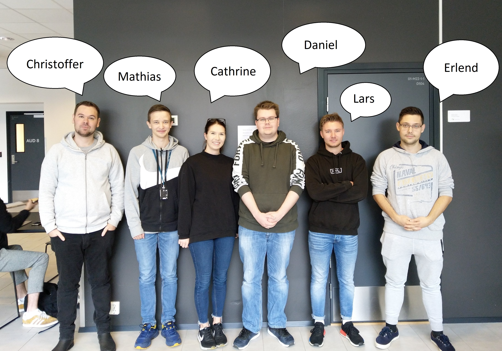

Prosjektbeskrivelse
Vår prosjektidé handler om å lage en nettside hvor man kan bestille bord på ulike restauranter i nærområdet på en enkel måte. Nettsiden vil gi våre brukere en helhetlig oversikt over hvilke type restauranter disse er, hvor mange bord som er ledig vist på en grafisk måte, og man kan filtrere restauranter ut fra ulike behov våre brukere har, som for eksempel hvilke type mat de serverer (indisk, vestlig, kinesisk, osv.), om restauranten er rullestolvennlig, har ulike alternativer i henhold til matallergier, osv. Nettsiden vil også inneholde en meny fra restauranten, stjerner/rating (tar utgangspunkt i tilbakemeldinger fra andre sider som f.eks. Google My Business), kart som viser restaurantene innenfor Bergen sentrum, oversikt over hvilke bord som er ledige, innloggingsmuligheter for å kunne sette seg opp på en venteliste og en kontaktside for henvendelser rettet mot oss.
Målgruppen vår besto i utgangspunktet av alle de som er interessert i å bestille bord på en restaurant i sitt nærområde. Etter mye diskusjon har gruppen kommet frem til at vi ønsker å begrense oss til Bergensområde, med eventuelt utvidelse i senere tid hvis det viser seg at det er stor interesse for produktet vårt. Vi ønsker å nå ut til de med god økonomi, som f.eks. turister, pensjonister, familier, eller folk i aldersgruppen 25-60+.